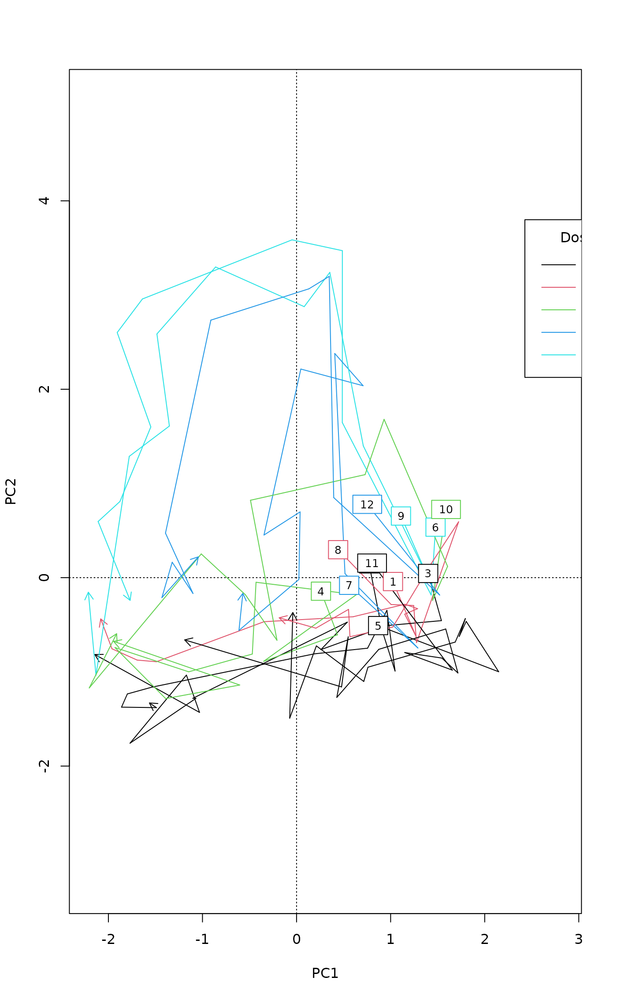

Add Arrows and Line Segments to Ordination Diagrams
ordiarrows.RdFunctions to add arrows, line segments, regular grids of
points. The ordination diagrams can be produced by vegan
plot.cca, plot.decorana or
ordiplot.
Usage
ordiarrows(ord, groups, levels, replicates, order.by, display = "sites",
col = 1, show.groups, startmark, label = FALSE, length = 0.1, ...)
ordisegments(ord, groups, levels, replicates, order.by, display = "sites",
col = 1, show.groups, label = FALSE, ...)
ordigrid(ord, levels, replicates, display = "sites", lty = c(1,1),
col = c(1,1), lwd = c(1,1), ...)Arguments
- ord
An ordination object or an
ordiplotobject.- groups
Factor giving the groups for which the graphical item is drawn.
- levels, replicates
Alternatively, regular groups can be defined with arguments
levelsandreplicates, wherelevelsgives the number of groups, andreplicatesthe number of successive items at the same group.- order.by
Order points by increasing order of this variable within
groups. Reverse sign of the variable for decreasing ordering.- display
Item to displayed.
- show.groups
Show only given groups. This can be a vector, or
TRUEif you want to show items for which condition isTRUE. This argument makes it possible to use different colours and line types for groups. The default is to show all groups.- label
Label the
groupsby their names. Inordiellipse,ordihullandordispiderthe the group name is in the centroid of the object, inordiarrowsin the start of the arrow, and inordisegmentsat both ends.ordiellipseandordihulluse standardtext, and others useordilabel.- startmark
plotting character used to mark the first item. The default is to use no mark, and for instance,
startmark = 1will draw a circle. For other plotting characters, seepchinpoints.- col
Colour of lines,
labelborders andstartmarkinordiarrowsandordisegments. This can be a vector recycled forgroups. Inordigridit can be a vector of length 2 used forlevelsandreplicates.- length
Length of edges of the arrow head (in inches).
- lty, lwd
Line type, line width used for
levels andreplicates inordigrid.- ...
Parameters passed to graphical functions such as
lines,segments,arrows, or toscoresto select axes and scaling etc.
Details
Function ordiarrows draws arrows and
ordisegments draws line segments between
successive items in the groups. Function ordigrid draws line
segments both within the groups and for the
corresponding items among the groups.
Examples
example(pyrifos)
#>
#> pyrifs> data(pyrifos)
#>
#> pyrifs> ditch <- gl(12, 1, length=132)
#>
#> pyrifs> week <- gl(11, 12, labels=c(-4, -1, 0.1, 1, 2, 4, 8, 12, 15, 19, 24))
#>
#> pyrifs> dose <- factor(rep(c(0.1, 0, 0, 0.9, 0, 44, 6, 0.1, 44, 0.9, 0, 6), 11))
mod <- rda(pyrifos)
plot(mod, type = "n")
## Annual succession by ditches, colour by dose
ordiarrows(mod, ditch, label = TRUE, col = as.numeric(dose))
legend("topright", levels(dose), lty=1, col=1:5, title="Dose")

## Show only control and highest Pyrifos treatment
plot(mod, type = "n")
ordiarrows(mod, ditch, label = TRUE,
show.groups = c("2", "3", "5", "11"))
ordiarrows(mod, ditch, label = TRUE, show = c("6", "9"),
col = 2)
legend("topright", c("Control", "Pyrifos 44"), lty = 1, col = c(1,2))